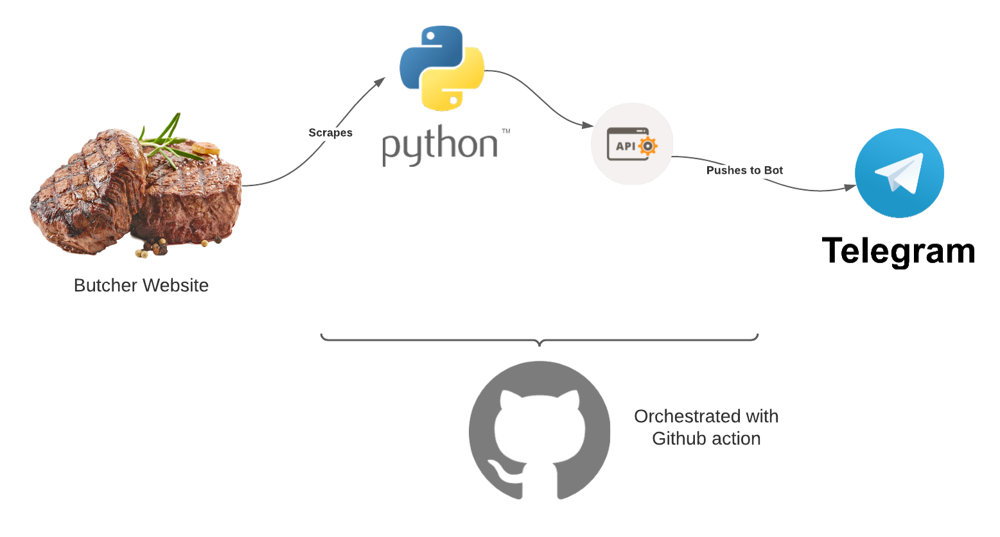
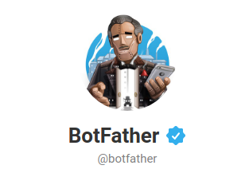
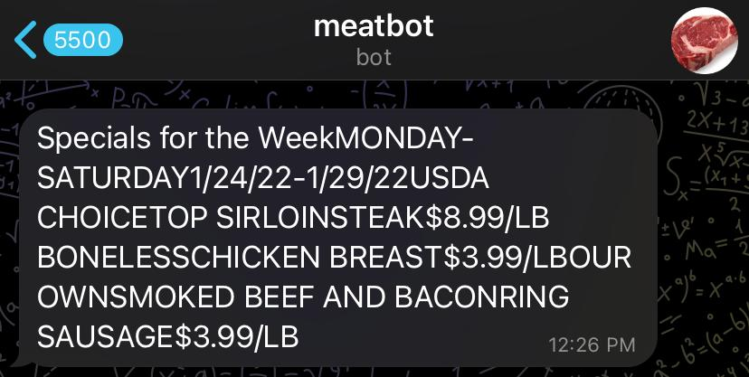

Using Github Actions, Python and Telegram to Get Ribeye Specials
LinkedIn | Github | Blog | Subscribe
I buy red meat - mostly steaks - at a local butcher shop. With the insane inflation in the price of meat recently, I’ve been really drawn to their weekly specials. I’ll typically buy a few hundred dollars worth whenever one of my favorite cuts like ribeye or New York strip steak is at a reasonable price.
My local butcher shop updates their weekly specials on Monday or Tuesday of each week. I was going out to their website manually and checking the specials, but since I’m a data scientist who specializes in web scraping, I couldn’t NOT automate that little task.
Solution
I began by making a small python app that I would run from the command line whenever I felt like checking. But, I learned that some guys were making simple Telegram bots to interact with APIs and such, so l checked that out and it seemed simple enough to program.
I decided on the following simple architecture: 
Now, onto building the first part: the python script to scrape the website.
Building it - python
First, let’s build a simple scraping script with the BeautifulSoup library. Make sure you init a Github repo at this point as well because we’ll need that to use Github actions.
from bs4 import BeautifulSoup as bs
from decouple import config
import requests
import sys
import telepotWe’ll use decouple to handle the repository secrets in the Github action, and telepot will work with the Telegram API for us.
Next, we’ll use the decouple config function to grab the Telegram user ID and API token
MY_ID = config("MY_ID")
API_KEY = config("API_KEY")After that, we’ll write two functions: one to scrape the website (it’s kind of messy, hence the garbage code), and the other to send the resulting string to our Telegram bot
def getSpecials():
URL = "http://www.meatsbyjohnandwayne.com/weeklyspecials.html"
response = requests.get(URL)
html = response.content
soup = bs(html, "lxml")
answer = (
soup.find("td")
.text.replace("\n", "")
.replace("\xa0", "")
.replace(
"(function(d, s, id) {\r var js, fjs = d.getElementsByTagName(s)[0];\r if (d.getElementById(id)) return;\r js = d.createElement(s); js.id = id;\r js.src = \"//connect.facebook.net/en_US/sdk.js#xfbml=1&version=v2.5\";\r fjs.parentNode.insertBefore(js, fjs);\r}(document, 'script', 'facebook-jssdk'));",
"",
)
)
return answer
def send_telegram_message(msg):
bot = telepot.Bot(API_KEY)
bot.getMe()
bot.sendMessage(MY_ID, msg)Finally, we’ll run the whole thing
if __name__ == "__main__":
# Get the specials
meats = getSpecials()
send_telegram_message(meats)If we run it, we get something like this:
Specials for the WeekMONDAY-SATURDAY1/31/22-2/5/22USDA
CHOICENEW YORK STRIPSTEAK$9.99/LB
TORTILLA CRUSTEDHOT PEPPER CHEESE STUFFED CHICKEN BREAST$6.99/LB
OUR OWNSMOKED HUNTERSRING SAUSAGE$3.99/LB which is really a big run-on sentence. You could easily parse this to make it prettier but I can read it fine so I moved on.
I use pipenv for dependencies and you can see that detail in the repo if you’re interested. Full python code at the end as well as at the repo.
Building it - Github actions
Now that we have a working script, we’ll set up the Github action to run our scraping script for us with this yaml file, .github.workflows/send_meat_via_telegram.yaml
name: meat_telegram
# Controls when the action will run.
on:
# Action can be manually started
workflow_dispatch:
# job runs on Mon and Tues mornings
schedule:
- cron: '0 15 * * 1'
- cron: '0 13 * * 2'
jobs:
build:
name: Build
runs-on: ubuntu-latest
steps:
- name: Check out this repository
uses: actions/checkout@v2
- name: Set up Python
uses: actions/setup-python@v2
with:
python-version: '3.8'
- name: Install pipenv
run: pip install pipenv
- name: Install deps
run: pipenv install
# Run the Python script
- name: Run Python script
run: pipenv run python main.py
env:
API_KEY: ${{ secrets.API_KEY }}
MY_ID: ${{ secrets.MY_ID }}Again, check out the repo for more details on where to place this script, but it is very simple: it checks out the current repo (and our python script from above), it sets up pipenv and runs the python scraping script using my two secrets. There is a cron statement up top to run this Monday and Tuesday morning (when I usually buy meat for the week).
Hold on for now with the secrets on the last two lines, we need to get them from Telegram quick.
Building it - Telegram
We need to do a few things to get up and running with our Telegram bot. First, search for “@BotFather” user. This is a bot maintained by Telegram to set up other bots. Follow the instructions therein to create a bot, and save the API key that he will give you.

Next, you need to find your unique chat ID. Search for Telegram bot “@username_to_id_bot”, and it should show you your ID. Save that.
Now that we have our API key and chat ID, we need to add those to our Github repo as repository secrets. I could explain how to do that but Github does a better job than I ever could. Remember to add your Telegram API key as “API_KEY” and your chat ID as “MY_ID” to coincide with our python script and Github action yaml file.
Wrap up
That’s it. Now this bot will send a notification to my (or your) Telegram account on a regular basis with the best meat specials in town. Use this repo as an example to extend python, github actions and telegram to solve your own problems and hammer your own nails.

Appendix
All of this code can be found at the repo: https://github.com/bradlindblad/meatbot
main.py
from bs4 import BeautifulSoup as bs
from decouple import config
import requests
import sys
import telepot
MY_ID = config("MY_ID")
API_KEY = config("API_KEY")
def getSpecials():
URL = "http://www.meatsbyjohnandwayne.com/weeklyspecials.html"
response = requests.get(URL)
html = response.content
soup = bs(html, "lxml")
answer = (
soup.find("td")
.text.replace("\n", "")
.replace("\xa0", "")
.replace(
"(function(d, s, id) {\r var js, fjs = d.getElementsByTagName(s)[0];\r if (d.getElementById(id)) return;\r js = d.createElement(s); js.id = id;\r js.src = \"//connect.facebook.net/en_US/sdk.js#xfbml=1&version=v2.5\";\r fjs.parentNode.insertBefore(js, fjs);\r}(document, 'script', 'facebook-jssdk'));",
"",
)
)
return answer
def send_telegram_message(msg):
bot = telepot.Bot(API_KEY)
bot.getMe()
bot.sendMessage(MY_ID, msg)
if __name__ == "__main__":
# Get the specials
meats = getSpecials()
send_telegram_message(meats)send_meat_via_telegram.yaml
name: meat_telegram
# Controls when the action will run.
on:
# Action can be manually started
workflow_dispatch:
# job runs on Mon and Tues mornings
schedule:
- cron: '0 15 * * 1'
- cron: '0 13 * * 2'
jobs:
build:
name: Build
runs-on: ubuntu-latest
steps:
- name: Check out this repository
uses: actions/checkout@v2
- name: Set up Python
uses: actions/setup-python@v2
with:
python-version: '3.8'
- name: Install pipenv
run: pip install pipenv
- name: Install deps
run: pipenv install
# Run the Python script
- name: Run Python script
run: pipenv run python main.py
env:
API_KEY: ${{ secrets.API_KEY }}
MY_ID: ${{ secrets.MY_ID }}Directory structure
.
├── .gitattributes
├── .github
│ └── workflows
│ └── send_meat_via_telegram.yml
├── main.py
├── Pipfile
├── Pipfile.lock
└── README.mdWant more content like this? Subscribe here